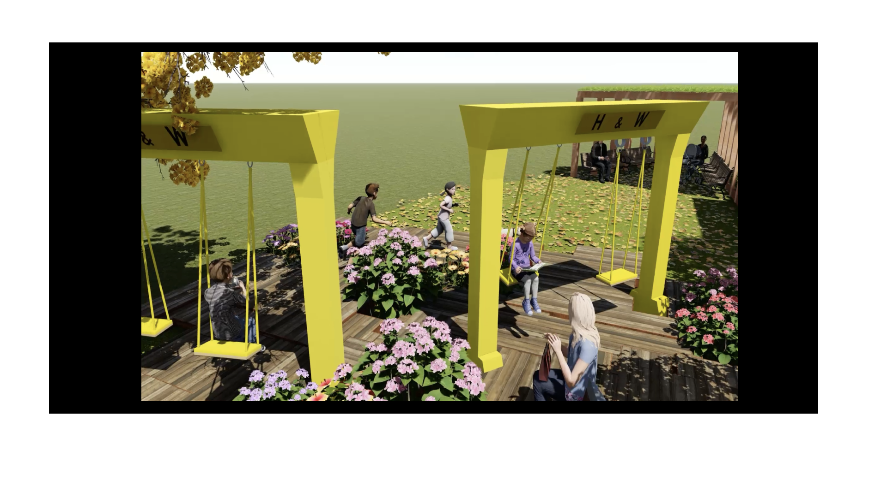
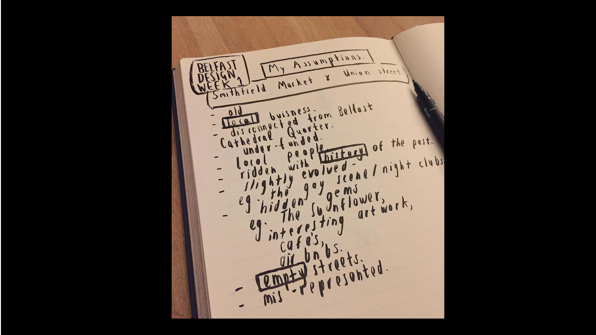
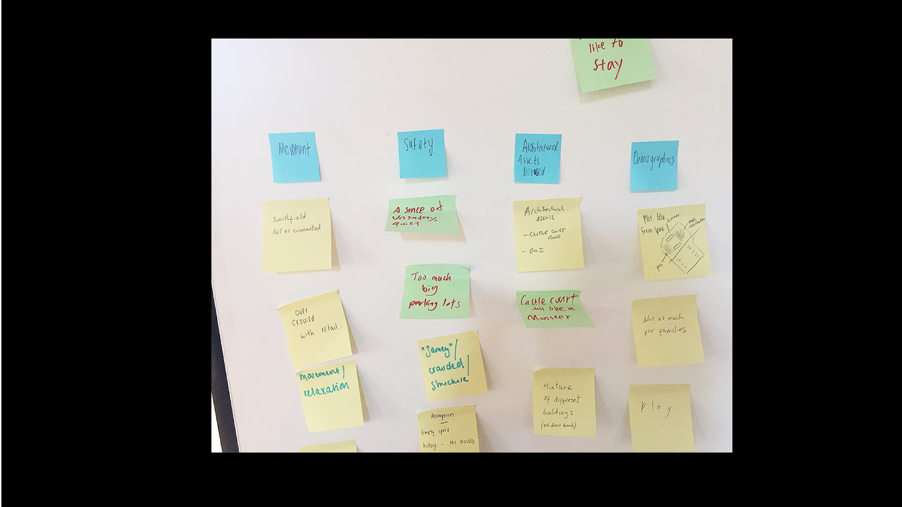
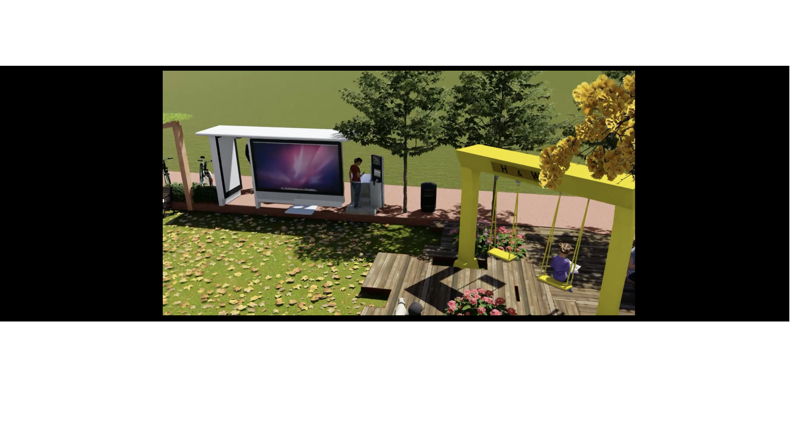

Urban Design Challenge.
A group project created by myself, Caireann Mcelligott and Jiajian Chen, as part of Belfast Design Week 2019.
Skills: User Research, Surveying, Field- Research, Working in a multidisciplinary team, Pitching to a client.
The Brief.
The Brief for the Urban Design Challenge was to turn the empty 'space' within the Smithfield Market and Union area of Belfast City Centre into a welcoming 'place'.
Discover.
To start out we thought about what our own individual perceptions of the area were.From this we were able to ask the question - "Why do we perceive the area this way?" and How can we change it.
We went outside. The most important part of this project was the feedback given by the local communities. It became apparent through talking to a lot of young families that there was a lack of safe, child-friendly outdoor space. It was also interesting to hear from several students that they only wallked up North Street because their "bus stopped there."
Define.
We tried to section the project into themes which we wished to address. Using post-it notes we organised our ideas into four main categories, Movement, Safety, Miss-used Architectural Assets, and Demographics.

Develop
We identified that the main theme to address was connections. The design concept would connect the city-centre, Ulster University and West Belfast. An outdoor green-space at the North Street car-park and bus-stop, will create a central connecting point in the middle of the key areas.

Deliver.
We created an outdoor space titled "The Pocket Park Plus". An Outdoor space which incorporates all age groups, from the elderly to young families, and students.